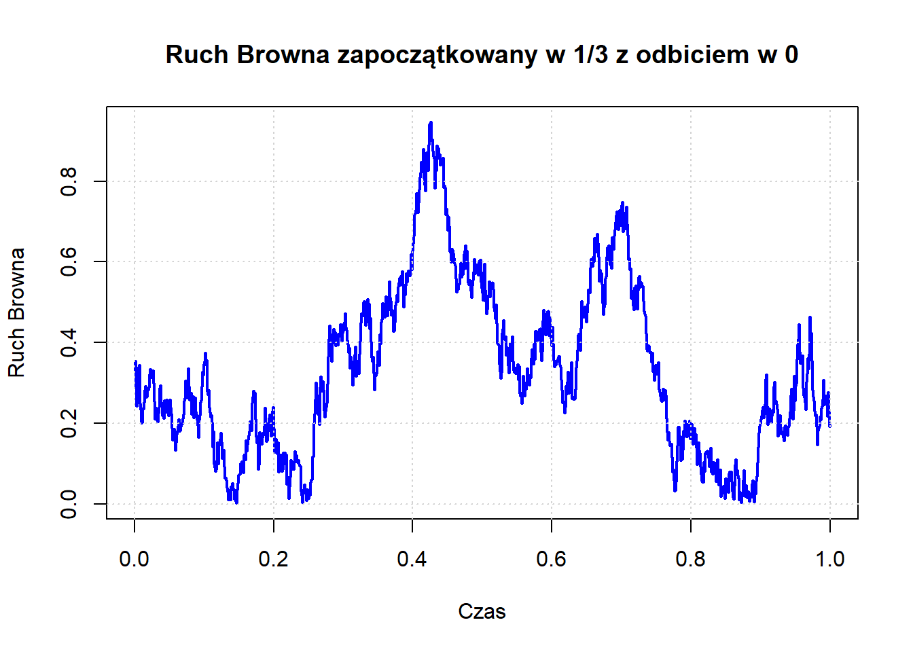

Wykład 7: Rozkłady stacjonarne, zaburzenia ruchu Browna
2024-11-14
Piotr Dyszewski
Rozkłady stacjonarne
Interesować nas będzie asymptotyczne zachowanie procesów Fellera. Podobnie jak w przypadku łańcuchów Markowa w czasie dyskretnym rozkłady graniczne są niezmiennicze ze względu na funkcje przejścia. Przez \(\Sigma\) oznaczać będziemy \(\sigma\)-ciało zbiorów borelowskich \(S\), czyli najmniejsze \(\sigma\)-ciało zawierające wszystkie otwarte podzbiory \(S\). Skoro \(S\) jest ośrodkowa, to \(\Sigma\) jest generowane przez wszystkie kule otwarte.
Dla Procesu Fellera \((\mathbf{P}, \mathbb{F})\) oraz rozkładu prawdopodobieństwa \(\mu\) na \(S\) definiujemy miarę probabilistyczną \(\mathbf{P}_\mu\) na \((S, \Sigma)\) wzorem \[\mathbf{P}_\mu[A] = \int_S \mathbf{P}_x[A] \: \mu(\mathrm{d}x), \qquad A \in \mathcal{F}.\] W tym miejscu zachęcamy czytelnika do wprawdzenia, że odwzorowanie \(x \mapsto \mathbf{P}_x[A]\) jest mierzalne dla \(A \in \mathcal{F}\). Miara \(\mathbf{P}_\mu\) to rozkład procesu Markowa przy rozkładzie początkowym \(\mu\).
Definicja 9 Niech \((\mathbf{P}, \mathbb{F})\) będzie procesem Fellera Rozkład prawdopodobieństwa \(\pi\) na \((S, \Sigma)\) nazywamy rozkładem stacjonarnym jeżeli \[\mathbf{P}_\pi \left[ X(t) \in A \right] = \pi(A)\] dla każdego \(A \in \Sigma\).
Chcielibyśmy wiedzieć, jak określić na podstawie generatora, czy miara prawdopodobieństwa na \(S\) jest stacjonarna dla procesu Fellera. Z tego powodu przepiszemy powyższą definicję w terminach półgrupy. Jeśli \(\mu\) jest miarą prawdopodobieństwa na \(S\), rozkład procesu w czasie \(t\), gdy rozkład początkowy jest \(\mu\), oznaczamy przez \(\mu T(t)\). Spełnia on zależność \[\int f \, \mathrm{d}(\mu T(t)) = \int T(t)f \, \mathrm{d} \mu = \mathbf{E}_\mu \left[ f(X(t)) \right]\] dla \(f \in C_0(S)\). Tutaj \(\mathbf{E}_\mu\) to wartość oczekiwana odpowiadająca \(\mathbf{P}_\mu\). Równoważnie \[\mathbf{E}_\mu[Y] = \int_X \mathbf{E}_x[Y] \: \mu(\mathrm{d}x)\] dla każdej ograniczonej zmiennej losowej \(Y \colon \Omega \to \mathbb{R}\).
Definicja 10 Miara prawdopodobieństwa \(\mu\) na \(S\) jest stacjonarna dla procesu Fellera z półgrupą \(T(t)\), jeśli \(\mu T(t) = \mu\) dla wszystkich \(t \geq 0\), tzn. jeśli \[\label{eq:3:28} \int T(t)f \, \mathrm{d}\mu = \int f \, \mathrm{d}\mu \quad \text{dla wszystkich} \ f \in C_0(S) \ \text{i} \ t \geq 0.\]
Zadanie 14 Pokaż, że jeśli \(\mu\) jest miarą prawdopodobieństwa na \(S\) i \(\mu T(t) \Rightarrow \nu\), to \(\nu\) jest stacjonarna.
Twierdzenie 14 Miara prawdopodobieństwa \(\mu\) na \(S\) jest stacjonarna dla odpowiadającego procesu wtedy i tylko wtedy, gdy \[\int Lf \, \mathrm{d}\mu = 0 \quad \text{dla wszystkich} \ f \in D.\]
Proof. Przypuśćmy, że \(\mu\) jest stacjonarna, i weźmy \(f \in \mathcal{D}(L)\). Wtedy \[\int Lf \, \mathrm{d}\mu = \int \lim_{t \to 0} \frac{T(t)f - f}{t} \, \mathrm{d}\mu = \lim_{t \to 0} \frac{\int T(t)f \mathrm{d}\mu - \int f \, \mathrm{d}\mu}{t} = 0.\] Przeciwnie, przypuśćmy, że \(\int Lf \, \mathrm{d}\mu = 0\) dla wszystkich \(f \in \mathcal{D}(L)\) i jeśli \(f \in \mathcal{D}(L)\) oraz \(f - \lambda Lf = g\), to \(\int f \, d\mu = \int g \, d\mu\). Iterując to, otrzymujemy \[\int (I - \lambda L)^{-n}g \, \mathrm{d}\mu = \int g \, \mathrm{d}\mu.\] Biorąc \(\lambda = t/n\) i przechodząc z \(n \to \infty\) wnioskujemy, że \[\int T(t)g \, \mathrm{d}\mu = \int g \, \mathrm{d}\mu.\]
Oto wystarczający warunek na istnienie rozkładu stacjonarnego.
Twierdzenie 15 Jeśli \(S\) jest przestrzenią zwartą, to istnieje miara stacjonarna.
Proof. Rozważmy proces Fellera z dowolnym rozkładem początkowym \(\mu\). Niech \(\nu_n\) będzie rozkładem zmiennej Zdefiniujmy miarę \(\nu_n\) na \(S\) poprzez warunek \[\int_S f(y) \nu_n( \mathrm{d}y) = \mathbb{E} \left[ \mathbf{E}_\mu \left[ f(X_{nU}) \right] \right]= \mathbb{E} \left[ \int_S T_{nU}f(y) \: \mu(\mathrm{d}y) \right].\] Dla \(f \in C_0(S)\), własność półgrupy daje \[\int T(t)f(y) \, \nu_n (\mathrm{d}y)= \mathbb{E} \left[ \int_S T_{nU+t}f(y) \: \mu(\mathrm{d}y) \right].\] także \[\begin{multline} \int f \, \mathrm{d}\nu_n - \int T(t)f \, \mathrm{d}\nu_n = \int f \, \mathrm{d}\nu_n - \int f \, \mathrm{d}(\nu_n T(t))\\ = \frac{1}{n} \left[ \int_0^t \int_S T(r)f \, \mathrm{d}\mu \, \mathrm{d}r - \int_n^{n+t} \int_S T(r)f \, \mathrm{d}\mu \, \mathrm{d}r \right]. \tag{25} \end{multline}\] Prawa strona (25) dąży do zera gdy \(n \to \infty\).
Teraz, ponieważ \(S\) jest zwarty, twierdzenie Prochorowa, implikuje, że istnieje podciąg \(\nu_{n_k}\) taki, że \[\nu_{n_k} \Rightarrow \nu\] dla pewnej miary prawdopodobieństwa \(\nu\) na \(S\). Zatem, ponieważ \(T(t)f \in C(S)\), możemy przejść do granicy w (25) wzdłuż ciągu \(\nu_{n_k}\), aby otrzymać \[\int f \, \mathrm{d}\nu = \int T(t)f \, \mathrm{d}\nu.\] Ponieważ to zachodzi dla wszystkich \(f \in C_0(S)\), wynika stąd, że \(\nu T(t) = \nu\).
Zaburzenia ruchu Browna
Przykład 5 Rozważmy ruch Browna na \([0, \infty)\) z absorpcją w 0.
Niech \(\tau\) będzie czasem pierwszego uderzenia w 0. Zdefiniujmy \[X_a(t) = \begin{cases} X(t) & \text{jeśli } t < \tau, \\ 0 & \text{jeśli } t \ge \tau, \end{cases}\] oraz oznaczmy przez \(L_a\) i \(T_a(t)\) odpowiednio generator i półgrupę. Dla \(f \in C_0[0, \infty)\), niech \(f_o\) będzie „nieparzystym” przedłużeniem \(f\) na \(\mathbb{R}\): \[f_o(x) = \begin{cases} f(x) & \text{jeśli } x \ge 0, \\ 2f(0) - f(-x) & \text{jeśli } x < 0. \end{cases}\] Z zasady odbicia dla każdej \(g \in C_0[0,\infty)\), \[\mathbf{E}_x \left[g(X(t)) \mathbf{1}_{\{ t \ge \tau \}} \right] = \mathbf{E}_x \left[g(-X(t)) \mathbf{1}_{\{ t \ge \tau \}} \right].\] Biorąc \(g=f_o\), \[\mathbf{E}_x \left[f_o(X(t)) \mathbf{1}_{\{ t \ge \tau \}} \right] = \mathbf{E}_x \left[f_o(-X(t)) \mathbf{1}_{\{ t \ge \tau \}} \right].\] Obie te wielkości są równe \[\frac{1}{2} \mathbf{E}_x \left[(f_o(X(t)) + f_o(-X(t)) ) \mathbf{1}_{\{ t \ge \tau \}} \right].\] Ostatnie wyrażenie, z definicji \(f_o\) jest równe \[f(0)\mathbf{P}_x(t \ge \tau).\] Podsumowując dla \(x \ge 0\), \[T_a(t)f(x) = \mathbf{E}_x \left[f(X(t)) \mathbf{1}_{\{ t < \tau \}} \right] + f(0)\mathbf{P}_x(t \ge \tau) = \mathbf{E}_x f_o(X(t)).\] Oczywiście \(f_o \notin C(\mathbb{R})\) o ile \(f(0) = 0\). Niemniej jednak, skoro \[f_o''(x) = \begin{cases} f''(x) & \text{jeśli } x > 0, \\ -f''(-x) & \text{jeśli } x < 0, \end{cases}\] wtedy \(f''(0) = 0\) jest potrzebne, aby \(f_o''\) było ciągłe. Wynika z tego, że \[\mathcal{D}(L_a) = \{f \in C_0[0, \infty) : f'' \in C[0, \infty), f''(0) = 0\},\] a dla \(f \in \mathcal{D}(L_a)\), \(L_a f = \frac{1}{2} f''\).
Przykład 6 Rozważmy ruch Browna na \([0, \infty)\) z odbiciem w \(0\).
 Proces ten jest zdefiniowany jako \[X_r(t) = |X(t)|,\] a jego generator i półgrupa będą oznaczane odpowiednio przez \(L_r\) i \(T_r(t)\). Jeśli \(f \in C_0[0, \infty)\), niech \(f_e\) będzie parzystym przedłużeniem \(f\) na \(\mathbb{R}\): \[f_e(x) = \begin{cases} f(x) & \text{jeśli } x \ge 0, \\ f(-x) & \text{jeśli } x < 0. \end{cases}\] Wtedy \[T_r(t)f(x) = \mathbf{E}_x \left[f(|X(t)|)\right] = \mathbf{E}_x f_e(X(t)) \quad \text{dla } x \ge 0.\] Zatem, \[f \in \mathcal{D}( L_r) \iff f_e \in \mathcal{D}(L).\] Wynika z tego, że \[\mathcal{D}(L_r) = \{f \in C[0, \infty) : f', f'' \in C[0, \infty), f'(0) = 0\},\] a dla \(f \in \mathcal{D}(L_r)\), \(L_r f = \frac{1}{2} f''\).
Przykład 7 Zaprezentujemy teraz ruch Browna na \([0, \infty)\) z lepkim \(0\). Dla \(c > 0\), rozważmy operator \(L_c\) zdefiniowany jako \(L_c f = \frac{1}{2} f''\) na \[\mathcal{D}(L_c) = \{f \in C_0[0, \infty) : f'' \in C[0, \infty), f'(0) = c f''(0)\}.\] Zauważmy, że graniczne przypadki \(c \downarrow 0\) i \(c \uparrow \infty\) odpowiadają odpowiednio odbiciu i absorpcji w \(0\). Jest to generator prawdopodobieństwa — dowód jest pozostawiony jako ćwiczenie. Oto weryfikacja własności (d) w Definicji 2: Dla \(g \in C_0[0, \infty)\) i \(\lambda > 0\), musimy rozwiązać \(f - \lambda L_c f = g\) dla \(f \in \mathcal{D}(L_c)\). Niech \(f_a \in \mathcal{D}(L_a)\) oraz \(f_r \in \mathcal{D}(L_r)\) będą rozwiązaniami \[f_a - \lambda L_a f_a = g \quad \text{oraz} \quad f_r - \lambda L_r f_r = g.\] Ponieważ wszystkie trzy generatory są równe \(\frac{1}{2} f''\) na swoich dziedzinach, \[f = \gamma f_a + (1 - \gamma) f_r\] jest wymaganym rozwiązaniem, pod warunkiem że \(f'(0) = c f''(0)\). Ma to miejsce, gdy \(\gamma\) spełnia \[\gamma f_a'(0) = c (1 - \gamma) f_r''(0).\] Aby znaleźć wartość \(\gamma\), \(f_a'(0)\) i \(f_r''(0)\) muszą mieć ten sam znak. Aby to sprawdzić, rozważmy \(h = f_a - f_r\). Wtedy \(h - \frac{\lambda}{2} h'' \equiv 0\), więc, ponieważ \(h\) jest ograniczone, \[h(x) = h(0) e^{-x \sqrt{2/\lambda}}.\] Wynika z tego, że \[f_a'(0) = -\sqrt{2/\lambda} h(0)\] oraz \[f_r''(0) = -\left(\frac{2}{\lambda}\right) h(0),\] więc mają ten sam znak, i \[\gamma = \frac{2c}{2c + \sqrt{2\lambda}}.\] Aby powiedzieć coś o zachowaniu tego procesu, gdy odwiedza 0, napiszmy
\[f = \alpha U_c(\alpha) g,\] gdzie \(\alpha = \lambda^{-1}\), a \(U_c\) jest rozwiązaniem dla procesu \(X_c(t)\) z generatorem \(L_c\). Można to zapisać jako \[f(x) = \frac{2c f_a(x) + \sqrt{2\lambda} f_r(x)}{2c + \sqrt{2\lambda}} = \alpha \int_{0}^{\infty} e^{-\alpha t} \mathbf{E}_x g(X_c(t)) \,\mathrm{d}t.\] Zastosujmy tę tożsamość do ciągu funkcji \(g\), które są nieujemne i rosną do \(1_{(0, \infty)}\). Odpowiadające im \(f\), \(f_a\), oraz \(f_r\) rosną odpowiednio do \[\alpha \int_{0}^{\infty} e^{-\alpha t} \mathbf{P}_x(X_c(t) > 0) \,\mathrm{d}t, \quad \alpha \int_{0}^{\infty} e^{-\alpha t} \mathbf{P}_x(X_a(t) > 0) \,\mathrm{d}t,\] oraz \(1\). Biorąc \(x = 0\), otrzymujemy \[\mathbf{E}_0 \int_{0}^{\infty} \alpha e^{-\alpha t} 1_{\{X_c(t) > 0\}} \,\mathrm{d}t = \frac{1}{1 + c\sqrt{2\alpha}}.\] Zatem miara Lebesgue’a zbioru \(\{t \ge 0 : X_c(t) = 0\}\) jest dodatnia, w przeciwieństwie do przypadku procesu odbijanego, który odpowiada \(c = 0\).